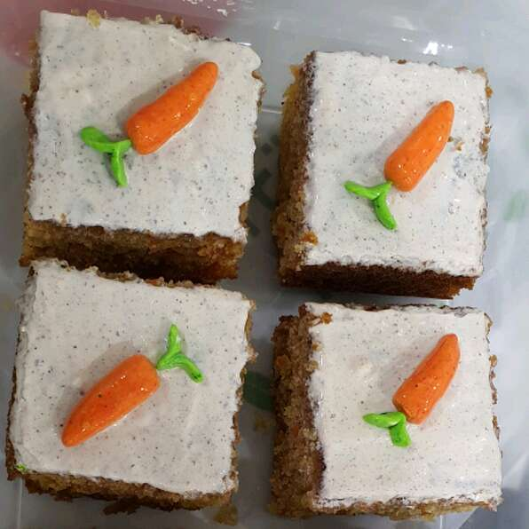

Carrot Cake

Description
Indulge in the sweet and savory flavors of carrot cake.
Whether it's for a birthday party or baby shower, this super simple carrot cake recipe is perfect for any occasion!
Ingredients
- 3 cups of all-purpose flour
- 2 cups white sugar
- 2.5 tsp baking soda
- 2.5 tsp ground cinnamon
- 1 tsp salt
- 1/4 tsp ground nutmeg
- 2 cups shredded carrots
- 1 (11 ounce) can mandarin oranges drained
- 1 1/4 cups vegetable oil
- 3 eggs
- 2 tsp vanilla extract
- 1 tsp grated orange zest
Steps
- preheat oven to 350 degrees F
- grease 9x13x2 inch baking dish
- whisk flour, sugar, baking soda, ground cinnamon, salt, nutmeg in a bowl
- beat carrots, mandarin oranges, oil, eggs, vanilla extract, and orange zest into flour mixture with an electric mixer until batter is smooth
- pour batter into prepared baking dish
- bake in preheated oven until toothpic inserted to center comes out clean (40-50 min)